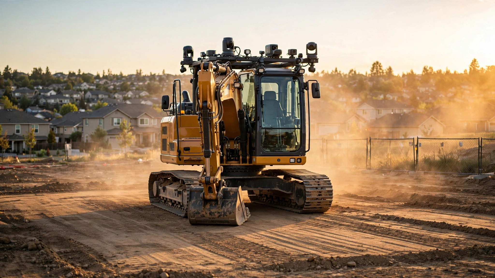

Your Excavator Operator Charges $150 an Hour. In Phoenix, the Same Machine Runs Itself. It Doesn't Take Breaks.

Somewhere in the Arizona desert, a 50-ton Caterpillar excavator is scooping earth into an articulated dump truck. Bucket curls, lifts, swings, dumps, and a truck rolls forward as another backs in to take its place in an endless rotation that runs twelve hours straight without a coffee break or a shift change or a single moment of human boredom.
Nobody is touching the controls.
Bedrock Robotics, a San Francisco startup you've probably never heard of, has moved more than 65,000 cubic yards of earth this way on a 130-acre manufacturing site with contractor Sundt Construction, which works out to roughly 5,400 dump truck loads executed autonomously on a project that will ultimately shift 700,000 cubic yards of rock and dirt before the site is ready for a manufacturing facility supporting the domestic energy market. These machines don't get bored, they don't get tired, and they don't quit after three months because a data center in Nevada offered $45 an hour.
"Our best operators aren't interested in the monotony of mass excavation work," said Dan Green, project manager at Sundt. "With Bedrock's technology handling the repetitive truck loading that goes on day after day, our skilled workforce can focus on more specialized and creative problems where their expertise is critical to success."
That quote matters. Pay attention to it.
If that sounds like it only matters to people building semiconductor fabs, keep reading. On January 7, Caterpillar stood on a stage at CES and announced autonomous versions of every major earthmoving machine they sell: excavators, loaders, dozers, and compactors. Cat, the company that put a yellow machine on every residential job site in America, just told the industry that those machines are going to drive themselves.
Further along than you think
Cat's autonomy program isn't new. Their mining trucks have been running without operators since a Carnegie Mellon partnership in the 1980s produced the first test vehicles, and the autonomous mining fleet has now moved 11 billion tonnes of material across 380 million kilometers, which is not a pilot program but a decade of production-scale evidence that big machines can move dirt without a human in the cab.
What changed at CES was the target, because construction sites are messier than mines, with terrain that shifts daily, trucks arriving from different directions, and workers walking through the operation while machines swing multi-ton buckets overhead. Cat's pitch is that their AI, machine learning, and edge computing stack can handle the chaos now, processing LiDAR, radar, GPS, and camera data into a 360-degree digital twin of the job site that updates in real time.
They're not alone, and the more interesting play might be coming from Gravis Robotics, an ETH Zurich spinout that raised $23 million last year and takes a different approach entirely. Instead of building new autonomous machines, they bolt a retrofit kit called the Gravis Rack onto whatever excavator you already own. It works with more than a dozen OEM brands, including Develon, Hitachi, Case, Yanmar, CNH, and Menzi Muck, which means a contractor who already owns a mixed fleet doesn't have to buy new machines or commit to a single manufacturer's ecosystem to start experimenting with autonomy. Mounted on the cab roof, the Rack packs LiDAR, cameras, GNSS positioning, and hydraulic sensors into a single unit, and a companion tablet called the Slate lets operators switch between autonomous and manual modes with a tap.
Gravis's system "feels the soil" through hydraulic pressure data, taking full scoops in soft ground and adjusting around buried rocks without getting stuck, which is the kind of adaptive behavior that previously required a veteran operator with fifteen years of seat time and an intuition for what the bucket was hitting three feet below grade. Gravis claims 30% faster performance in benchmarked scenarios for high-volume tasks like trenching, truck loading, and bulk excavation. Manchester Airport became the site of the UK's first large-scale autonomous excavation in a partnership with Taylor Woodrow, and building materials giant Holcim is already using the system for quarry operations.
Why this matters for your house
Site preparation is the first check you write on any new home. Clearing, grading, excavation, and foundation prep for a typical residential lot runs $3,500 to $9,200, depending on your state and soil conditions. That money pays for an operator at $120 to $150 an hour and a machine that rents for another $100 to $250 an hour. On a quarter-acre lot, the work might take two to four days. On difficult terrain with rock or heavy clay, longer.
Operator shortages are real, getting worse, and occasionally fatal. Eighteen workers died in trench collapses in 2024. Eleven more in the first half of 2025. OSHA reminds us that one cubic yard of soil weighs as much as a compact car, which makes trench work some of the most dangerous labor in construction, and meanwhile experienced operators are leaving for data centers and renewable energy projects that pay better for less monotonous work.
So here's the math that matters.
A production homebuilder putting up 200 houses a year spends roughly $700,000 on site preparation at $3,500 per lot. If a Gravis Rack retrofit delivers 30% productivity gains, that's $210,000 in annual savings, enough to pay for the retrofit kit and the operational overhead within months, possibly within a single subdivision phase. That machine grades lot after lot after lot with centimeter-scale GPS accuracy, and the builder's best operators handle the tricky stuff: the retaining walls, the utility trenching around existing infrastructure, the slope work that requires judgment no AI has matched yet.
A custom builder doing five homes a year? Those numbers collapse. Five lots at $3,500 is $17,500 in total site prep spend, and even a 30% gain saves $5,250, which means you're not buying a retrofit kit for that and you're not even renting one.
Autonomous grading will reach custom builders eventually, probably through their excavation subcontractors, who'll amortize the hardware across dozens of clients. But that's a five-to-ten-year timeline, not a next-quarter one.
Who just moved the needle
On June 30, the day before this article published, a small Canadian contractor called Urban Infrastructure Group announced something most of the industry missed. UIG, which specializes in concrete, drainage, and underground services for large-scale new residential housing developments, launched a research initiative to develop autonomous robotics for the exact trades that residential infrastructure runs on: trenching, excavation, pipe-laying, and concrete work.
"We are not pivoting away from construction," said CEO Gary Alves. "We are evaluating automation opportunities that are directly relevant to our existing construction business."
Read that again.
This is the signal, and it isn't Cat's CES spectacle or a VC-backed startup in San Francisco. A working contractor that digs trenches and pours slabs for residential subdivisions looked at the labor math, looked at the technology, and decided to build its own autonomy program using its own active job sites as testing environments. When the companies that do the work start building the tools, the technology isn't speculative anymore.
What this means if you're writing the checks
If you're a production homebuilder running 100+ lots per year, call Bedrock and Gravis, both of which are actively seeking contractor partners. Retrofit economics already pencil at your scale, especially on sites with repetitive grading profiles where autonomous cycles can run with minimal human supervision.
If you're a GC managing residential site work, start asking your excavation subs what their autonomy roadmap looks like. It matters. Subs who answer "what's that?" are the ones who'll be charging you 40% more in three years because they can't find operators, while the subs already testing retrofit kits will be the ones offering fixed-price grading packages with tighter tolerances than a human operator can sustain over an eight-hour shift when the sun is overhead and the dust turns the cab into an oven and fatigue starts bending the grade by half an inch per pass.
If you're buying a house in a new subdivision, understand that the site beneath your foundation was probably graded by a guy in a machine who was tired by hour nine. In a few years, it might be graded by a machine that holds centimeter accuracy from the first lot to the two-hundredth. Whether that makes your foundation better is an open question, but whether it makes it more consistent is not, and consistency is what prevents the settlement cracks and drainage failures that don't show up until year three.
Limitations
Almost all of the production data comes from large-scale commercial earthmoving, not residential lot preparation. Bedrock's 65,000-cubic-yard deployment and Gravis's benchmarked 30% productivity gains were measured on sites with uniform, repetitive tasks. Residential lots have trees, utility crossings, setback constraints, and neighboring structures that make each one different. Nobody has published peer-reviewed data on autonomous grading performance across heterogeneous residential lots.
Cost estimates in this article use publicly available pricing from Angi and Fixr for residential site preparation and published operator labor rates. Retrofit kit pricing is estimated from industry signals, not confirmed by Bedrock or Gravis, neither of which publishes consumer-facing rates. Our break-even analysis assumes a 200-lot production builder at national average site prep costs, which vary significantly by region, soil conditions, and terrain complexity. California lots cost two to three times what Indiana lots cost.
Caterpillar's CES announcement was aspirational, and Cat's autonomous construction lineup does not have published ship dates, pricing, or residential-scale specifications. Their mining autonomy track record is real, but mines are controlled environments with predictable traffic patterns. Residential construction sites are not.